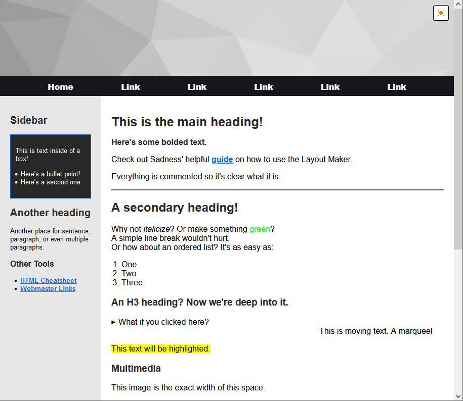

Example website launched
I decided to showcase the same website implemented in different ways. One here with Neocities, and one here with Netlify and GitHub.
The main difference is since Neocities free accounts have certain limitations, I host things like audio on GitHub, which is more flexible. I also use a folder structure for Netlify and GitHub, but I keep everything in the root for Neocities (just for demonstration purposes), and use inline <style> and <script> tags.
Plus I created this snazzy button to use in relevant guides:
Using the layout builder by Sadness, I created a basic layout and some text that demonstrates the styling applied:

My goal is for this website to effectively showcase the different ways you can customize your own site, and even for people to copy it and use it themselves.
2023/07/30